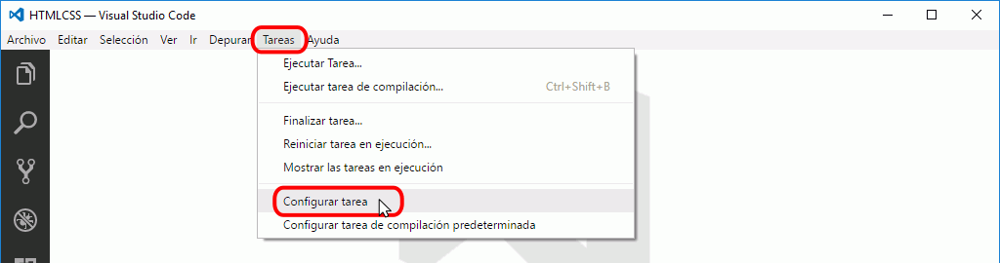
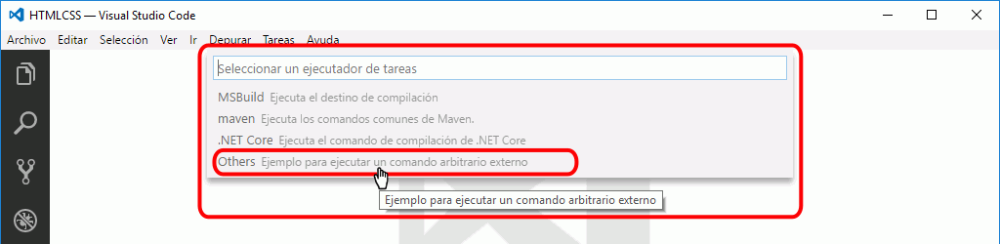
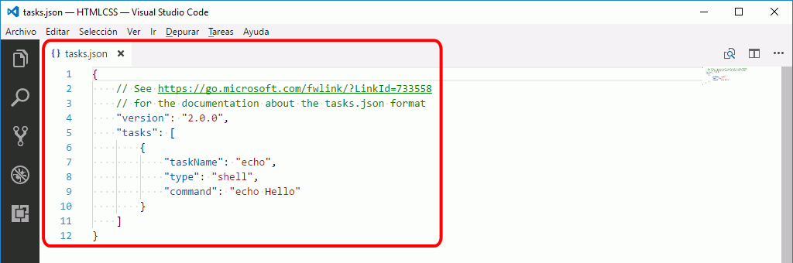
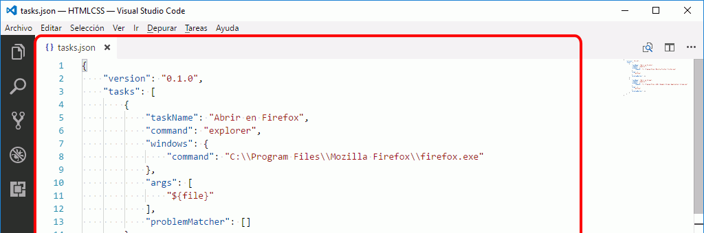
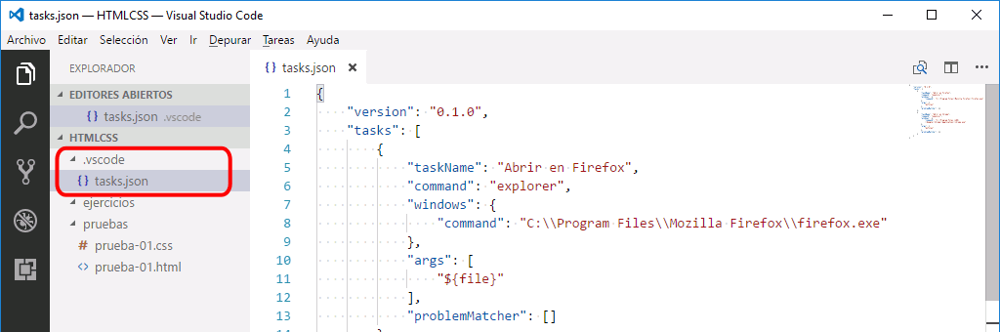
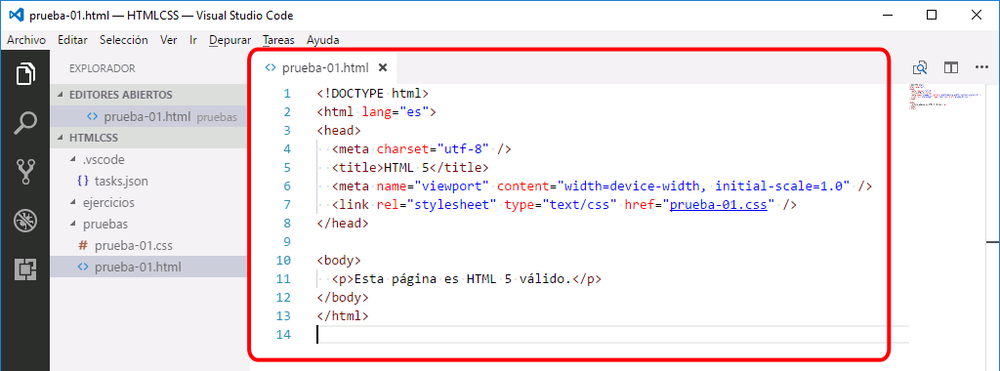
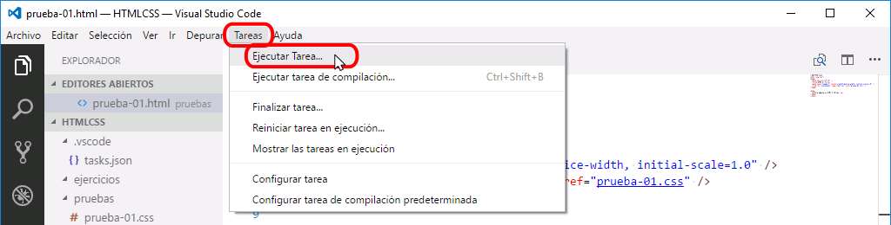
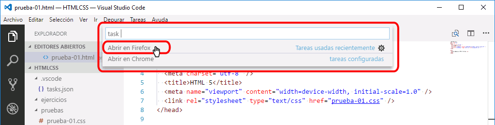
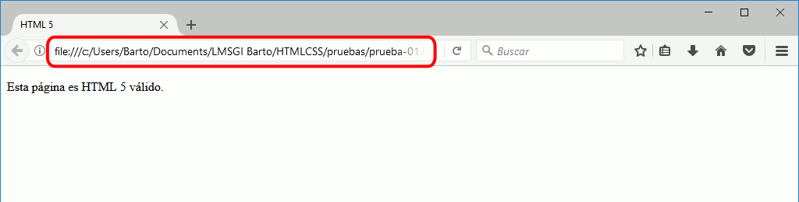

Para abrir páginas web en un navegador desde Visual Studio Code es necesario primero crear una tarea, que se podrá utilizar posteriormente cuantas veces se quiera.
Las capturas siguientes muestran como crear una tarea (más exactamente, se crean dos tareas simultáneamente), para poder abrir las páginas web en Firefox y en Chrome.



Al crearse, este fichero contiene un ejemplo de tarea:
{
// See https://go.microsoft.com/fwlink/?LinkId=733558
// for the documentation about the tasks.json format
"version": "2.0.0",
"tasks": [
{
"taskName": "echo",
"type": "shell",
"command": "echo Hello"
}
]
}

Estas son las tareas que abren ficheros en Firefox y Chrome (para copiar y pegar en VSC). Hay que comprobar que la ruta hasta los ejecutables de los navegadores son las correctas:
{
"version": "0.1.0",
"tasks": [
{
"taskName": "Abrir en Firefox",
"command": "explorer",
"windows": {
"command": "C:\\Program Files\\Mozilla Firefox\\firefox.exe"
},
"args": [
"${file}"
],
"problemMatcher": []
},
{
"taskName": "Abrir en Chrome",
"command": "explorer",
"windows": {
"command": "C:\\Program Files (x86)\\Google\\Chrome\\Application\\chrome.exe"
},
"args": [
"${file}"
],
"problemMatcher": []
}
]
}
El archivo tasks.json se crea en la carpeta .vscode que se crea en la carpeta abierta. Esto permite utilizar la tarea en todos los archivos de la carpeta abierta (y en los archivos de las subcarpetas). Pero si abrimos otra carpeta y queremos utilizar la misma tarea tendremos que crear de nuevo la tarea (o copiar la carpeta .vscode).

Para utilizar alguna de las tareas creadas, siga los pasos siguientes:



